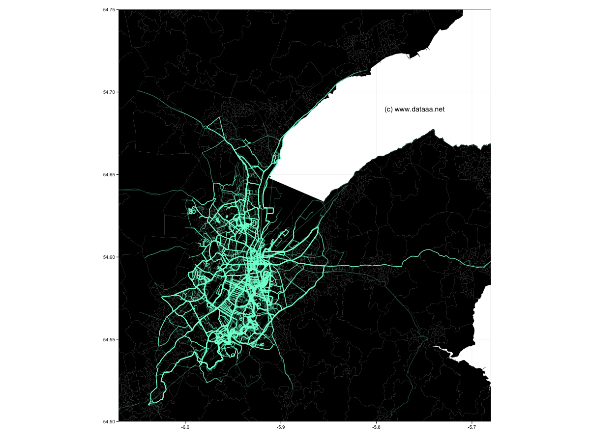

The highways & byways of Belfast

The map above shows some of the roads of Belfast, but as defined by the footsteps of its inhabitants. I have plotted over 3,000 running and walking routes as registered by users of the MapMyRun website. The more opaque the line, the more well-trodden the route.
This visualisation uses GPS tracks from wearables or routes manually input via the MapMyRun website. Obtaining these GPS tracks (as .gpx files) can be tricky, but UnderArmour, recent owners of the MapMyRun/Ride/Walk/Hike/Fitness franchise have a very generous API, which allows 100,000 calls per day (and up to 25 per second). It is possible to get a list of routes in a particular region via an API call, but it is equally straightforward enough to just parse an HTML list:
http://www.mapmyrun.com/gb/belfast-nir/routes.
Each page is limited to 1,000 routes, but can be iterated through using limit and offset:
http://www.mapmyrun.com/gb/belfast-nir/routes?limit=3000&offset=2000
GPX files (which are basically a list of longitude and latitude points) can be accessed via the UA API:
https://oauth2-api.mapmyapi.com/v7.1/route/<route number>/?field_set=detailed&format=gpx
The API requires certain headers to be sent, which can be achieved with the httr::GET command in R and the add_headers option. However, a complexity of the httr::GET command is that data is stored in memory (in binary form), and therefore must be written to disk in order to be used. Thus the full call is something along the lines of:
GET(paste0(fileUrl1,route_id,fileUrl2),add_headers("api-key" = <my_api_key>, "authorization" = "<my_secret_key>"), accept("application/gpx+xml"), write_disk(paste0("MapMyRun_", route_id, ".gpx")), progress())
Once the GPX files are obtained, the longitude and latitude points from each route can be stored in a data frame, and plotted with ggplot2 or similar.
The shapefile used to give the background layer is courtesy of NISRA and subject to Crown Copyright.